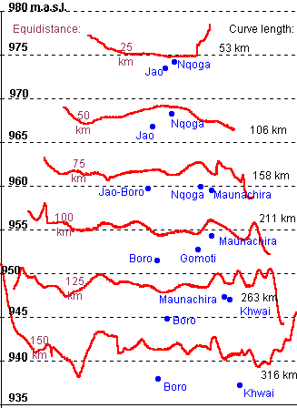

Equidistance elevation profiles

The graph shows land surface
elevations along profiles of equal distance from the apex of the fan. Land
surface profiles are shown in red and channels as blue dots. Note that
the horisontal lengths of the profiles are not to scale. What is clearly
seen is that the channels are not flowing in the absolute low points. The
channels create their own raised beds by depositing material. This is further
seen in the relation between the Nqoga and other channels. Nqoga is the
continuation of the Okavango channel, and carries most of the material
transported into the delta. The bed of the Nqoga is hence raised compared
to parallell channels (Jao at 25 and 50 km; Maunachira at 75 km), These
elevation differences are the driving force for water filtering through
the aquatic vegetation from the dying Nqoga channel into next generation
of channels. To a lesser degree this also happens were water from the Maunachira
filters through to the Khwai (at 125 km). At 100 km Mauanachira flows over
a "hill", and at 125 km Maunachira and Khwai have created a valley through
another hill. This indivates that the "hill" is a ridge of tectonic origin.
This ridge is also seen in the profiles of land
elevations and water elevations along the channels. Also note the sloping
elevations on the right side - the route by the Selinda spillway isobviously
the steepest way out of the Delta.
Click
for next page.